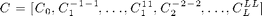
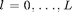

Model ODFs
Describes how to define model ODFs in MTEX, i.e., uniform ODFs, unimodal ODFs, fibre ODFs, Bingham ODFs and ODFs defined by its Fourier coefficients.
| On this page ... |
| Introduction |
| The Uniform ODF |
| Unimodal ODFs |
| Fibre ODFs |
| ODFs given by Fourier coefficients |
| Bingham ODFs |
| Combining MODEL ODFs |
Introduction
MTEX provides a very simple way to define model ODFs, e.g. unimodal ODFs, fibre ODF, Bingham ODFs, or ODFs specified by Fourier coefficients. The central idea is that MTEX allows you to calculate with ODFs as with ordinary number, i.e., you can multiply and ODF with a certain number, you can add, subtract or rotate ODFs. Model ODFs may be used as references for ODFs estimated from pole figure data or EBSD data and are instrumental for pole figure simulations and sinle orientation simulations. These relationships are visualized in the following chart.

The Uniform ODF
The most simplest case of a model ODF is the uniform ODF which is everywhere identical to one. In order to define a uniform ODF one needs only to specify its crystal and specimen symmetry and to use the command uniformODF.
cs = symmetry('cubic'); ss = symmetry('orthorhombic'); odf = uniformODF(cs,ss)
Undefined function or method 'symmetry' for input arguments of type 'char'.
Error in ==> ModelODFs at 35
cs = symmetry('cubic');
Unimodal ODFs
In order to define a unimodal ODF one needs
- a preferred orientation mod1
- a kernel function psi defining the shape
- the crystal and specimen symmetry
mod1 = orientation('Miller',[1,2,2],[2,2,1],cs,ss); psi = kernel('von Mises Fisher','HALFWIDTH',10*degree); odf = unimodalODF(mod1,cs,ss,psi) plotpdf(odf,[Miller(1,0,0),Miller(1,1,0)],'antipodal')
For simplicity one can also ommit the kernel function. In this case the default de la Vallee Poussin kernel is choosen with halfwidth of 10 degree.
Fibre ODFs
In order to define a fibre ODF one needs
- a crystal direction h0
- a specimen direction r0
- a kernel function psi defining the shape
- the crystal and specimen symmetry
h0 = Miller(0,0,1);
r0 = xvector;
odf = fibreODF(h0,r0,cs,ss,psi)
plotpdf(odf,[Miller(1,0,0),Miller(1,1,0)],'antipodal')
ODFs given by Fourier coefficients
In order to define a ODF by it Fourier coefficients the Fourier coefficients C has to be give as a literaly ordered, complex valued vector of the form

where  denotes the order of the Fourier coefficients.
cs = symmetry('triclinic'); % crystal symmetry ss = symmetry('triclinic'); % specimen symmetry C = [1;reshape(eye(3),[],1);reshape(eye(5),[],1)]; % Fourier coefficients odf = FourierODF(C,cs,ss) plot(odf,'sections',6,'position',[139 262 762 268])
plotpdf(odf,[Miller(1,0,0),Miller(1,1,0)],'antipodal')
Bingham ODFs
The Bingham dsitribution is a parametric ODF distribution that allows for many different kinds of ODF, e.g.
- unimodal ODFs
- fibre ODF
- spherical ODFs
A Bingham distribution is characterized by
- four orientations
- four values lambda
cs = symmetry('-3m'); ss = symmetry('-1');
A Bingham unimodal ODF
% a modal orientation mod = orientation('Euler',45*degree,0*degree,0*degree); % the corresponding Bingham ODF odf = BinghamODF(20,mod * quaternion(eye(4)),cs,ss) plot(odf,'sections',6,'silent','position',[100 100 600 300])
A Bingham fibre ODF
odf = BinghamODF([-10,-10,10,10],quaternion(eye(4)),cs,ss) plot(odf,'sections',6,'silent')
A Bingham spherical ODF
odf = BinghamODF([-10,10,10,10],quaternion(eye(4)),cs,ss) plot(odf,'sections',6,'silent');
Combining MODEL ODFs
All the above can be arbitrily rotated and combinend. For instance, the classical Santafe example can be defined by commands
cs = symmetry('cubic'); ss = symmetry('orthorhombic'); psi = kernel('von Mises Fisher','HALFWIDTH',10*degree); mod1 = orientation('Miller',[1,2,2],[2,2,1],cs,ss); odf = 0.73 * uniformODF(cs,ss,'comment','the SantaFe-sample ODF') ... + 0.27 * unimodalODF(mod1,cs,ss,psi) close all plotpdf(odf,[Miller(1,0,0),Miller(1,1,0)],'antipodal')